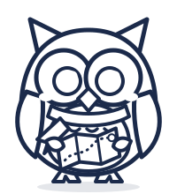

À imprimer · 3 à 10 ans
Les jeux de Barcelone
Bingo à cocher, chasse au trésor, coloriage de Mondo et trois pages de journal de bord. Imprimez, glissez dans le sac : les visites deviennent un jeu. Ces pages sont aussi incluses dans le carnet PDF.

Jeu
Le bingo de Barcelone
Coche chaque case quand tu l'as vue. Une ligne complète : tu as gagné !
Un palmier
Une perruche verte
Une mosaïque
Un dragon
Un bateau
Un téléphérique
Une tour pointue
Un château de sable
Une glace
Un bus rouge
Une fontaine
Une mouette
Le drapeau catalan
Un musicien de rue
Un vélo
Des churros
Une serviette de plage
Un parasol

Jeu
La chasse au trésor
- Trouve un animal sculpté sur un bâtiment, une fontaine ou une statue. Dessine-le.
- Écris le nom d'une rue, d'une place ou d'une station que tu as aimée.
- Trouve quelque chose de rouge, quelque chose de bleu et quelque chose de doré.
- Goûte un aliment que tu ne connaissais pas. C'était comment ?
- Compte les marches d'un escalier que tu as monté aujourd'hui.
- Repère un mot que tu ne comprends pas et demande ce qu'il veut dire.
- Avec l'aide d'un adulte, prends une photo de ton endroit préféré.
- Dis bonjour et merci à quelqu'un dans la langue du pays.
Coloriage
Colorie Mondo
Mondo part à Barcelone avec toi. De quelles couleurs sera-t-elle ?

Journal de bord
Mon jour 1 à Barcelone
Aujourd'hui, il fait : ☐ soleil ☐ nuages ☐ pluie ☐ vent
Ce que j'ai vu
Ce que j'ai mangé
Mon dessin du jour
Ma note de la journée
☆ ☆ ☆ ☆ ☆
Journal de bord
Mon jour 2 à Barcelone
Aujourd'hui, il fait : ☐ soleil ☐ nuages ☐ pluie ☐ vent
Ce que j'ai vu
Ce que j'ai mangé
Mon dessin du jour
Ma note de la journée
☆ ☆ ☆ ☆ ☆
Journal de bord
Mon jour 3 à Barcelone
Aujourd'hui, il fait : ☐ soleil ☐ nuages ☐ pluie ☐ vent
Ce que j'ai vu
Ce que j'ai mangé
Mon dessin du jour
Ma note de la journée
☆ ☆ ☆ ☆ ☆